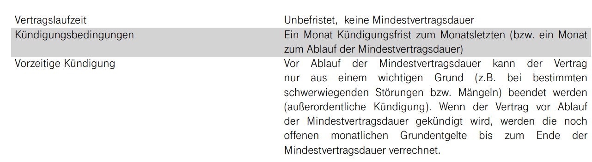

{kind=link}
{kind=link}
Super das klingt gut.
Danke für das Feedback.
Ja bei DSL ist die Stabilität besser und auch die Leistung deutlich konstanter.
Schön, dass es für dich nun passt.

Guten Abend zusammen,
ich besitze den gigakraft gaming 300 Tarif mit Docsis 3.1 und bin mit dem PC direkt über LAN mit dem Router verbunden. Die Geschwindigkeit kommt eigentlich Rund um die Uhr vollständig an.
Nun zu meinem Problem, dass mittlerweile seit mehreren Wochen besteht.
Nach etwa 18 Uhr und bis ca. 22 Uhr fangen Twitch-Livestreams, Discord Videoübertragungen etc. plötzlich an extrem zu laggen. Ich habe nun über Pingplotter twitch.tv angepingt. Mir ist dabei aufgefallen, dass der Ping von dem Server "m-ef1-i.M.DE.NET.DTAG.DE", sobald es bei mir im Stream laggt, auf etwa 2500ms erhöht oder gar komplett ausfällt (*) - Screenshot davon ist anbei. Außerdem habe ich mich auch eben mit einem VPN verbunden, sobald dieser aktiviert ist, läuft alles flüssig. Ich gehe deshalb davon aus, dass das Problem nicht ich bin und von Magenta behoben werden muss. Was für Möglichkeiten stehen mir hier zu Verfügung?
Vielen Dank für eure Hilfe. Falls ihr noch weitere Infos benötigt, schicke ich diese gerne nach.
Liebe Grüße
Simon
Bearbeitet von Simon4339
Hallo @Simon4339 ,
ist der Ping auch anderer Stelle (z.B.: bei Games) höher? Laufen irgendwelche Downloads im Hintergrund? Sind andere Geräte im Internet aktiv?
Liebe Grüße, Jonathan
Hallo @Jonathan Dorian ,
aktuell sind mir die Problem nur bei Twitch und Discord bekannt.
Bei Teamspeak bleibt der Ping konstant, lediglich abends um etwa 3-4ms höher. Viele Multiplayer-Spiele spiele ich aktuell nicht. Bei denen die ich aktuell spiele fiel mir bis jetzt aber auch noch nichts auf.
Downloads liefen keine im Hintergrund, andere Geräte waren auch nicht aktiv im Internet unterwegs.
LG Simon
Es ist bei mir genau das gleiche das abends trotz vollem Speed die Twitch Livestreams nur buffern aber komischerweise mit einer VPN behoben wird.
Finde ich schade das seitdem es nicht mehr über AORTA sondern über die DTAG läuft das die Streams abends einfach nur laggen bzw. buffern und ich auf eine VPN angewiesen bin die nicht dann über die DTAG geht.
Bearbeitet von RealTrappad4Hey, ich scheine ebenfalls bei genau dem gleichen Vertrag auch genau das gleiche Problem zu haben. Bei mir ist es bis jetzt sowohl bei Discord-Telefonaten als auch bei Multiplayergames (CS:GO) aufgetreten. Bei mir hat bis jetzt nur ein Neustart des Routers und des Computers zeitweise geholfen (teils jedoch mehrmals hintereinander). VPN werde ich nun ausprobieren.
Gibt es mittlerweile eine Erklärung oder Lösung dafür?
Liebe Grüße
Hi,
Hab den gleichen Tarif (über Kabel) und ähnliche Probleme:
VPN (Express-VPN, NordVPN und Exitlag getestet) hilft bei mir nur bedingt -> bei Discord treten mit VPN kaum mehr Paket-Verluste auf, Twitch und Spiele haben weiterhin Probleme.
PC ist natürlich über Kabel (verschiedene getestet) direkt am Modem angeschlossen, Leitungswerte passen alle lt. Hotline und sie sehen auch keine "Ausfälle".
Wenn ich über einen Mobile-Hotspot übers Smartphone reingehe (4G) sind die Paket-Verluste bei Discord weg und Twitch läuft auch sauber.
Der Anruf bei der Hotline ist naja - ich kann ihnen mal einen tracert-Screenshot übers Kontaktformular schicken :D.
Ich hab zwei Kollegen noch gebeten mir von einer IP noch einen tracert-Screenshot zu schicken - hoffentlich sieht man dort einen Unterschied mit dem man Magenta klar machen kann das hier etwas nicht passt.
Lg Martin
Bearbeitet von Martin7
Die von euch geschilderten Probleme, sind zu 99% auf den Puma Bug zurückzuführen, und haben nichts mit schlechtem Routing oder dergleichen zu tun. Dieser ist bekannt dafür, lag spikes und packet loss zu verursachen.
Danke für deine Antwort - hat die Fiber Box 2 nun auch diesen Puma-Bug? Ich finde diesbezüglich gespaltene Aussagen. Zum einen ist immer die Rede von dem Puma 6 Chip, in der Fiber Box 2 ist angeblich der Puma 7 Chip verbaut, der "besser" sein sollte wenn auch nicht perfekt.
Bei diesem Puma 6 Test ist bei mir jedenfalls alles grün.
Andere Leute hier im Forum berichten das sie solche Probleme erst seit der Umstellung auf diesen Gaming-Tarif haben.
Gibt es überhaupt irgendwelche Lösungsansätze? Leider gibts bei uns nur den Magenta Kabelanschluss. Das A1-Kabel wurde damals nur in den Keller gelegt und der Vermieter weigerte sich auf Nachfrage hier die Leitung in die Wohnung legen zu lassen.
Bearbeitet von Martin7
vor einer Stunde schrieb Martin7:Danke für deine Antwort - hat die Fiber Box 2 nun auch diesen Puma-Bug? Ich finde diesbezüglich gespaltene Aussagen. Zum einen ist immer die Rede von dem Puma 6 Chip, in der Fiber Box 2 ist angeblich der Puma 7 Chip verbaut, der "besser" sein sollte wenn auch nicht perfekt.
Bei diesem Puma 6 Test ist bei mir jedenfalls alles grün.
Andere Leute hier im Forum berichten das sie solche Probleme erst seit der Umstellung auf diesen Gaming-Tarif haben.
Gibt es überhaupt irgendwelche Lösungsansätze? Leider gibts bei uns nur den Magenta Kabelanschluss. Das A1-Kabel wurde damals nur in den Keller gelegt und der Vermieter weigerte sich auf Nachfrage hier die Leitung in die Wohnung legen zu lassen.
Grundsätzlich tritt der Puma Bug in der FB 2 etwas "abgeschwächter" in Erscheinung, jedoch hatte ich auch mit dieser sporadische lag spikes um die 2000 ms !
Der Test sieht mit Puma 7 Chipsätzen nur deshalb besser aus, da Intel das Problem erkannt hat, und TCP-Packets nun priorisiert behandelt werden. Für UDP-Packets hat sich aber nichts geändert, was auch die Probleme mit Online-Gaming verdeutlichen. Weiters ist das Problem nicht mittels Software zu lösen, da es sich um einen "Entwurfsfehler" handelt.
Ich habe mir vor einiger Zeit einen DSL-Anschluss angeschafft, und seitdem keine Probleme mehr.
Danke für die Erklärung - einzige Aussicht bei mir ist das ich sowieso auf Wohnungssuche bin aber kann halt auch noch dauern.
Wenn dem so ist geht das für mich eigentlich schon in Richtung Betrug - zum einen wird großartig stabiles Internet angeworben mit x Features und dann sowas...
vor 56 Minuten schrieb Martin7:Danke für die Erklärung - einzige Aussicht bei mir ist das ich sowieso auf Wohnungssuche bin aber kann halt auch noch dauern.
Wenn dem so ist geht das für mich eigentlich schon in Richtung Betrug - zum einen wird großartig stabiles Internet angeworben mit x Features und dann sowas...
Da stimme ich dir voll und ganz zu, dass das schon in Richtung Betrug geht, zumal sich Magenta zu dieser Thematik natürlich ausschweigt, da das Ganze ansonsten rechtliche Konsequenzen hätte. Die einzige Lösung für dieses Problem wäre die Routerfreiheit, denn dann kann ich mir ein Endgerät nach Wahl anschaffen, und so betroffene Geräte umgehen.
Hatte das falsch in Erinnerung, das Kabel vom Keller in die Wohnung durch den ISP zu verlegen wurde mir damals erlaubt aber ich hab das dann wieder verworfen warum auch immer.
DSL-Anschluss hab ich heute bestellt, Techniker kommt nächste Woche.
Hoffe das zumindest Magenta dann Kulanz zeigt wenn man aufgrund der Probleme innerhalb der Vertragslaufzeit kündigt.
Bearbeitet von Martin7vor 27 Minuten schrieb Martin7:Hatte das falsch in Erinnerung, das Kabel vom Keller in die Wohnung durch den ISP zu verlegen wurde mir damals erlaubt aber ich hab das dann wieder verworfen warum auch immer.
DSL-Anschluss hab ich heute bestellt, Techniker kommt nächste Woche.
Hoffe das zumindest Magenta dann Kulanz zeigt wenn man aufgrund der Probleme innerhalb der Vertragslaufzeit kündigt.
Du solltest eigentlich außerordentlich kündigen können, ansonsten die RTR involvieren.
Das Hauptproblem ist das für Magenta ja alles passt, Leitungswerte sind ok und Störungen sind keine vorhanden. Entsprechend stellen sie sich quer und sagen das keine vorzeitige Kündigung möglich ist.
Und selbst ich hab jetzt keine echten aussagekräftigen "Beweise" außer das bei Twitch alle paar Sekunden die Auflösung umschaltet, die Lags in Spielen kann man aufzeichnen aber da kommt dann die Aussage das es an den Spiele-Server liegt.
Technik-Hotline ist wie immer mühsam, "starten sie das Modem neu" etc. hilft hier halt nicht weiter.
Danke für den Hinweis mit der RTR - habe ich nun kontaktiert.
vor 2 Stunden schrieb Martin7:Das Hauptproblem ist das für Magenta ja alles passt, Leitungswerte sind ok und Störungen sind keine vorhanden. Entsprechend stellen sie sich quer und sagen das keine vorzeitige Kündigung möglich ist.
Und selbst ich hab jetzt keine echten aussagekräftigen "Beweise" außer das bei Twitch alle paar Sekunden die Auflösung umschaltet, die Lags in Spielen kann man aufzeichnen aber da kommt dann die Aussage das es an den Spiele-Server liegt.
Technik-Hotline ist wie immer mühsam, "starten sie das Modem neu" etc. hilft hier halt nicht weiter.
Danke für den Hinweis mit der RTR - habe ich nun kontaktiert.
Ich hatte ihnen damals gedroht, dass ich mich betreffend der Puma-Thematik an die Medien wende, und konnte ohne Probleme außerordentlich kündigen.
Nachdem ich derzeit alle Unterlagen für die RTR zusammentrage habe ich mir nochmals diese Vertragszusammenfassung durchgelesen die ich letztes Jahr erhalten habe als ich den Tarif bei Magenta vom alten UPC-Tarif auf den gaming-Tarif umstellen ließ
Da steht bei Vertragslaufzeit "keine Mindestvertragsdauer" drinnen - durch die Tarif-Umstellung letztes Jahr war es ja nur eine Vertragsänderung und würde das derzeit so interpretieren das hier keine weitere Bindungsfrist vorhanden ist (Magenta hat mir ja geschrieben das angeblich noch eine Bindung bis 09/2023 vorhanden ist). 
Liege ich falsch? Ich frage morgen natürlich nochmals nach aber mich würde eure Meinung interessieren.
Die Umstellung war dann wohl im September letzten Jahres?
Solltest du die ersten vier Monate keine Grundgebühr bezahlt haben, beim gigakraft Gaming 300, dann ist dies mit 24 Monaten Bindung einhergegangen.
Ja genau war im September - nein hab durchgehend gezahlt, musste sogar Aktivierungsentgelte für den neuen Tarif zahlen.
Nagut, wird sich morgen dann klären.
Edit 14.03: Heute angerufen und der andere Mitarbeiter hat nun bestätigt das keine Bindung mehr vorhanden ist und er hat die Kündigung gleich eingetragen.
Bearbeitet von Martin7Hi,
Bin seit heute mit DSL unterwegs und siehe da, keine nennenswerte Paket-Verluste im Discord-Stream mehr, Twitch-Streams laufen sauber, Websites laden schnell.
Danke euch für eure Hilfe!
LG Martin
Super das klingt gut.
Danke für das Feedback.
Ja bei DSL ist die Stabilität besser und auch die Leistung deutlich konstanter.
Schön, dass es für dich nun passt.